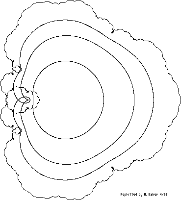

Figure 6(a). [Item 123] Image of circles |z| = 1/2, 3/4, 7/8, 1 under the function
inf
=== n!
\ z
f(z) = > --- .
/ n!
===
n=1
Figure 6(a). [Item 123] Image of circles |z| = 1/2, 3/4, 7/8, 1 under the function
inf
=== n!
\ z
f(z) = > --- .
/ n!
===
n=1
[Retyped and formatted in html ('Web browser format) by
Henry Baker,
April, 1995.]